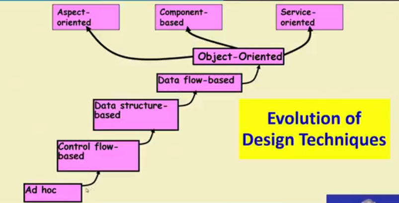

Evolution of SE Techniques
⇒ Early computer Programming(50s)
• Every programmer developed his/her own style of writing programs:
◇ According to his intution (called exploratory or build-and-fix programming)
⇒ High Level Language Programming (Early 60s)
• High level languages such as FORTRAN, ALGOL, and COBOL were introduced:
◇ This reduced software development efforts greatly.
~~~~~~~~~~~~~~~~~~~~~~~~~~~~~~~~~
• Software development style was still exploratory.
◇ Typical program sizes were limited to a few thousands of line of source code.
• Size and complexity of programs increased further:
◇ Exploratory programming style proved to be insufficient.
• Programmers found:
◇ Very difficult to write cost effective and correct programs.
• Programmers found it very difficult:
◇ To understand and maintain programs written by others.
~~~~~~~~~~~~~~~~~~~~~~~~~~~~~~~~~
⇒ Control flow based Design (late 60s)
• What is a program's control structure?
◇ The sequence in which the program's instructions are executed.
• To help design programs having good control structure:
◇ Flow charting technique was developed
• Using flow charting technique:
◇ One can represent and design a program's control structure.
◇ When asked to understand a program:
▪ One would mentally trace the program's execution sequence.
• A program having a messy flow chart representation:
◇ Difficult to understand and debug.
These control flow designes started to become more complex due to usage of JUMP statements and this gave us new method of Structured programming.
⇒ Structured Programming
When Dijkastra said that using GOTO statements makes the program very complex and sofesticated then many counter articles were written against this announcement.
It was soon conclusively proved that only three programming constructs are sufficient to express any programming logic.
A program is called structured:
->When it uses only the following types of contructs:
- Sequence (statement seq)
- Selection (if else, switch)
- Iteration (loops)
->Consist of modules
Advantages of structured programming
->They are:
- Easy to read and understand
- Easier to maintain
- Require less effort and time for development
- Less buggy
⇒ Data Structure-Oriented Design(Early 70s)
• As program sizes increased further, soon it was discovered:
◇ It's important to pay more attention to the design of data structures of a program than to the design of its control structure.
• Techniques which emphasize designing the data structure and derive the program structure from it are called data structure oriented design techniques.
⇒ Data flow Oriented Design (Late 70s)
• Data flow-oriented techniques advocate:
◇ The data item input to a system must first be identified.
◇ Processing required on the data to produce the required outputs should be determined.
• Data flow technique identifies:
◇ Different processing stations(functions) in a system.
◇ The items (data) that flow between processing stations.
⇒ Object Oriented Design (80s)
• Object oriented technique
◇ An intuitively appealing design approach
◇ Use of natural objects (such as employees, pay-roll-register,etc.) occuring in a problem are first identified.
◇ Relationships among objects(such as composition, reference, and inheritance) are determined
◇ Each object essentially acts as a data hiding(or data abstraction) entity.
Advantages
- Simplicity
- Increased Reuse possibility
- Lower development time and cost
- More robust code
- Easy maintenance
